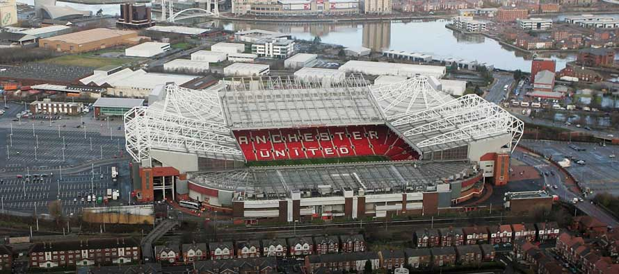

Gallery


- 
News and Features

Jose Mourinho explains why he feels Paul Pogba is being unfairly treated by football pundits.
Sir Alex Ferguson says he once made and enquiry for Milan star Paolo Maldini

Pogba deserves more respect
Sir Alex wanted Maldini
Fixtures and Results
History
Manchester United Football Club is a professional football club based in Old Trafford, Greater Manchester, England, that competes in the Premier League, the top flight of English football. Nicknamed "the Red Devils", the club was founded as Newton Heath LYR Football Club in 1878, changed its name to Manchester United in 1902 and moved to its current stadium, Old Trafford, in 1910.
TOPTeam


Please select an image to view more about each.
TOPMourinho: Pogba deserves more respect
Jose Mourinho believes Paul Pogba deserves more respect from football pundits as he continues to be an influential performer for Manchester United in his first season back at the club. The Frenchman's record price tag means his performances can be subject to media scrutiny but at Wednesday's pre-match press conference, Mourinho reiterated that everybody at the club is happy with the midfielder's contribution. The manager feels the player, who turns 24 today, is having to deal with undue criticism and suggests that envy may be a factor in the flak. "I feel that the world is losing values and we all know that and envy is coming into certain levels," said Mourinho, on the eve of United's second leg against FC Rostov. "I'm scared for especially the next generation if things go in this direction. Envy is everywhere. "It's not Paul's fault that he gets 10 times the money that some players, some very good players, got in the past. It's not his fault that some of the pundits are in real trouble with their lives and they need every pound to survive and Paul is a multi-millionaire. It's not his fault. "I think he deserves respect. I think his family deserve respect. He's a kid that comes from a working family, a family with three boys and I'm sure they needed a lot of food on that table every day because they are big giants. So I'm sure that the mum and the dad had to work hard for many, many years for them. "He is a kid that came to Manchester as a teenager, that fought for his career here, that was not afraid to move and to go to another country and to look for better conditions for him. A kid that reached the top of the world with his work, nobody gave him anything. "I'm very happy with Paul. The club is very happy with Paul and I think also a good thing is that because of his personality, he doesn't given an ass what people say."
Sir Alex reveals he tried to sign Maldini
Sir Alex Ferguson was always known to be shrewd in the transfer market, yet even the greatest manager in British football could not prize the ever-loyal Paolo Maldini away from AC Milan. The Italian defender is among the most famous one-club men in the game after making 904 appearances for the San Siro side across a 24-season career, impressively winning seven Serie A titles, five Champions League trophies and 14 other major cups, while also earning 127 international caps. Maldini joined Sir Alex on stage to launch Tour 2017, presented by Aon, in New York City on Tuesday night and our former manager revealed an amusing tale about the time he ambitiously enquired about a deal with the Rossoneri. “I did try but, when I met his father [ex-coach Cesare], he was quite formidable,” Sir Alex said, when asked if he ever wanted Paolo to play for United. “I got a shake of the head and that was all. He said 'my grandfather is Milan, my father is Milan, I am Milan and my son is Milan... forget it!’” Maldini, who retired aged 40 in May 2009, was unaware of the request but politely admitted he would not have left his beloved Milan. “The good part about it is that he [his father] has never talked to me about it. There was no chance though!”
Manchester United have won a record 20 League Titles, a joint-record 12 FA Cups, 5 League Cups and a record 21 FA Community Shields. The club has also won three European Cups, one UEFA Cup Winners' Cup, one UEFA Super Cup, one Intercontinental Cup and one FIFA Club World Cup. In 1998–99, the club became the first in the history of English football to achieve the treble of the Premier League, the FA Cup and the UEFA Champions League.
The 1958 Munich air disaster claimed the lives of eight players. In 1968, under the management of Matt Busby, Manchester United became the first English football club to win the European Cup. Alex Ferguson won 38 trophies, including 13 Premier League titles, 5 FA Cups and 2 UEFA Champions Leagues, between 1986 and 2013, when he announced his retirement. José Mourinho is the club's current manager, having been appointed on 27 May 2016.
Manchester United was the highest-earning football club in the world for 2015–16, with an annual revenue of €689 million, and the world's third most valuable football club in 2015, valued at £1.98 billion.[8] As of June 2015, it is the world's most valuable football brand, estimated to be worth $1.2 billion. It is one of the most widely supported football teams in the world. After being floated on the London Stock Exchange in 1991, the club was purchased by Malcolm Glazer in May 2005 in a deal valuing the club at almost £800 million, after which the company was taken private again. In August 2012, Manchester United made an initial public offering on the New York Stock Exchange. The club holds several rivalries, most notably with Liverpool, Manchester City and Leeds United, and more recently with Arsenal.
 5 .
5 .  11 .
11 .  16 .
16 .  18 .
18 . Manager Profile

Jose Mourinho
| Nationality: | Portuguese |
|---|---|
| Manager From: | 27 May 2016 |
| Years as Manager: | 0 |
Manager Bio
The Portuguese had previously had a semi-professional football career and made his coaching breakthrough in the backroom staff of Sir Bobby Robson at Sporting Lisbon, Porto and Barcelona.
After brief but successful stints in charge at Benfica and Uniao de Leiria, he won the UEFA Champions League with Porto in 2004 only a year after lifting the UEFA Europa League in his first full season as manager.
He also won back-to-back Portuguese league titles and two domestic cup competitions at Porto before Chelsea came calling.
Page Two
Previous NextIn his first campaign at Stamford Bridge in 2004/05, Chelsea won their first top-flight title for 50 years with a record haul of 95 points.
They retained the Premier League title a year later and won the FA Cup and the League Cup twice with Mourinho in charge.
Mourinho left Chelsea in 2007 and his next managerial role came with Inter Milan, where he won the Serie A title and the Italian Super Cup in his first season.
Page Three
PreviousThree-time Premier League winner Jose Mourinho began his third spell in England's top-flight when he was announced as Louis van Gaal's successor at Manchester United on 27 May 2016.
Mourinho started his Premier League career in London when he was named manager of Chelsea in June 2004 before leaving early into the 2007/08 campaign.
He returned to the Blues on 3 June 2013, nine years and a day after getting his first taste of management in England’s top-flight.
Page One
Next